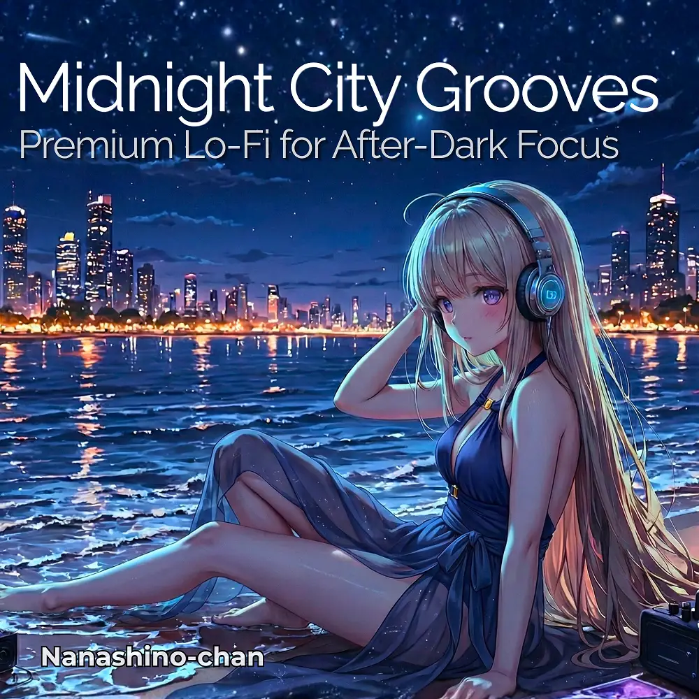

Lo-Fi
Midnight City Grooves: Premium Lo-Fi for After-Dark Focus
Nanashino-chan
Explore Midnight City Grooves: Premium Lo-Fi for After-Dark Focus by Nanashino-chan: 19 instrumental tracks spanning Lo-Fi. Start with Neon Engine Start / Midnight Highway Lights, preview the collection and find your favorites on streaming services.
2026-01-20 · Released · 19 tracks · Instrumental
Preview the album
The jacket stays here until you choose a track. Playback uses Apple Music. Select your track inside the player.
APPLE MUSIC PREVIEW
Choose a track to listen
The jacket stays here until you choose a track. Playback uses Apple Music. Select your track inside the player.
If playback is unavailable, open the album or track on the streaming service.
Find this album on streaming services
Links marked “search” open search results. Select the album or track on the service.
Track list 19
- 01Neon Engine Start
- 02Midnight Highway Lights
- 03Analog Skyline Glow
- 04Cassette Dreams
- 05City Signals in Blue
- 06Retro FM After Dark
- 07Quiet Streets, Soft Synths
- 08Neon Reflections on Glass
- 09Late Night Drive Loop
- 10Warm Static Memories
- 11Passing Lights &Slow Beats
- 12Synthwave Cruise Control
- 13Empty Roads at 2AM
- 14Fading Neon Horizon
- 15Night Air & Vinyl Noise
- 16Last Exit Before Dawn
- 17Blue Hour Autobahn
- 18.Slow Fade of City Lights
- 19Engine Off, Neon Silence
Find a sound for your next post
Copy “Nanashino-chan + track title” and paste it into your social app’s music search. Availability depends on your region and account. Copying the name does not grant usage rights.